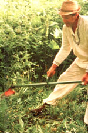
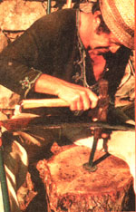
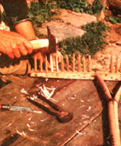
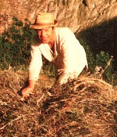
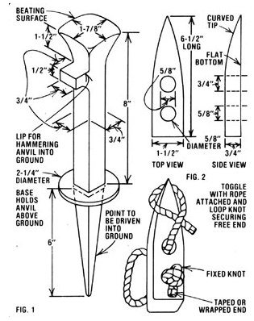
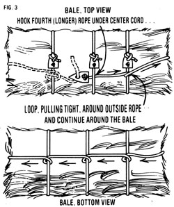
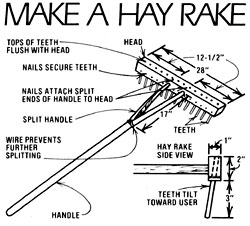

The Art Of Hand Haying
May/June 1979
You can save a good deal of money?and find a lot of satisfaction-if you learn ...
In my village in the French Alps-as well as in many other parts of the world-hay is stil harvested by hand ... and there are two good reasons why this ancient skill has survived. For one thing, our meadows-on steep, terraced slopes-an accessible only by footpaths, so the use of machines is just about out of the question. In addition, the folks who live in this Alpine town are. mostly small landholders, who don't require enormous quantities of feed for their livestock.
Of course, it's very possible that your homestead doesn't spread over hundreds of acres either, and-even if your land is flat enough to accommodate a motorized mower and baler-you might not have sufficient grass to justify the purchase or rental of haying machines. In such a ease, it could be worth your while to take up a scythe and learn one of man's oldest agricultural arts.
Haying by hand can be terrible drudgery ... or-with only the swish of the scythe through perfumed grass to break the silence of an early, sunny morning-it can be one of the sweetest pleasures of farm life. But, if you hope to find poetry in the fields-intead of back pain-you must collect the right tools . . keep them in top condition ... and use them correctly.
MAKIN' HAY
You can expect a cow to eat about 35 pounds of hay a day during cold weather. Horses will require almost 44 pounds apiece, while sheep and goats can get by on 4-1/2 pounds of fodder daily. So, if you multiply your animals' requirements by the number of days that you might have to keep them enclosed, you'll be able to estimate your total hay needs.
Different types of land, of course. give different grass yields. It takes my household (two people) six weeks to bring in 6.4 tons from our five acres (sometimes with a little help from friends). We work full eight-hour days-including weekends-and only take a break when it rains. (Ask neighboring farmers what you can expect from,your fields, and-if you can count on the labor of two regular workers-allow a month or I more to harvest enough hay for one cow.)
Most folks reap their grass when it's reached peak growth (just before flowering) in order to get maximum yields. However, sirice young plants are higher in food value, some French farmers cut before the peak ... then harvest a second cutting later. By mowing twice, these people make nearly normal yields and get superfine fodder.
In our village, however, we have a short growing season-May to September-so we only cut once ... usually in about mid-July, when the grass is "high as an ass's eye". After the harvest, we let the pasture grow again, and-in the autumn-put our two cows out to graze on the second growth.
Don't fret if you can't mow precisely at the "right time", however. If you're delayed, it won't make a huge difference in the feed's nutritional value. But, whether your fields are wild or cultivated, diversity of plants is important. Good provender should contain several species of both grasses and legumes (such as clover, alfalfa, and vetch) if it's to provide your animals with well-balanced meals.
SCYTHE SELECTION AND USE
To "cut your own", you'll need a good scythe with a blade made of strong, easy-to-sharpen forged steel. The ban dle (this can be either metal or wood) should include an adjustable bolt fastening that allows you to regulate the blade's angle.
Scythe experts use light, razor-thin blades, but these are easily broken on hidden rocks when used by the uninitiated. Y ou'll do better to buy a sturdier tool to withstand the knocks that you, as a beginner, will give it. After a few years of haymaking, you can safely use the thinner types. you can be sure of your tool's quality-whatever kind of scythe you buy-if you make a simple resonance test: Just thump the blade's surface with your finger. and if it rings clear ... it's fine. A dull thud, on the other, hand, is a good enough reason to look elsewhere.
A person's height is used to determine the length of his or her -mower's- handle. Stand the scythe (with the blade attached) at your side. The upper grip should come just to your armpit, and-with your arm hanging naturally at your side-you should be able to grasp the lower grip with your hand. Strength is the determining factor in choosing a blade length. Tile men of outvillage usually use a 26- to 30-inch model, while women and children are more comfortable-and efficient-with the lighter 24-inchers.
Once you've chosen your, scythe, practice with it: Grab the lower grip with your right hand, palm down, and the upper grip with your left hand, palm up. Then, stand with your legs apart to balance the swing and concentrate on a whole body pivot-knees bending to accommodate to the sway-and shift your body from right to left and back. (Wrist and arm movements are secondary to this "body English".)
Keep the blade as nearly parallel to the ground as possible, and swing it from right to left to make the cut (or swath) of grass. The cutting edge should slice into a patch of grass at an acute angle, similar to the way a carving knife slices into a hunk of meat.
Cut four inches or less into the grass with each sweep and swing the blade only as widely as is comfortable for you. As you return the scythe to the right, the grass will slip off in a neat row to your left. Should you find that you lean too far over-or too far back-in an effort to keep the blade ''flat'' ... simply adjust its angle.
Obviously, when you come to unyielding obstacles-rocks or branches-either moderate your swing, work around the hazards, or avoid that spot altogether. And never force the blade to cut woody vegetation ... the swing of the scythe should provide the power for your cut.
KEEP IT SHARP!
Blade sharpening is a ritual with the old-timers in our village. After several rows of grass, these ''pros" sharpen their scythes' cutting edges with a stone, and-every hour or so-stop to beat them on a special anvil. The regularity of such "touch-ups" should give you some idea of how important a sharp scythe is ... so take a few extra minutes to hone your blade correctly. If you don't do this, you'll waste time and energy chopping furiously and unsuccessfully at stubborn patches of grass.
The traditional scythe anvil (see Fig. 1 that accompanies this article) has a slightly rounded head (not the flatiron type) and is used with a ballpeen hammer. To employ this tool, simply drive its pointed end into the earth, lay the scythe blade on the rounded head of the anvil, hold the concave side of the ''knife" away from you with one hand and hammer with the other. Then-working in small areas from the wide end of the blade to the point-beat gently (always striking away from you and at an angle) along the cutting edge. The idea is to stretch the metal outward until it's thin and sharp and the nicks are worked out. (If you hammer straight down on the blade, its edge will ripple.)
You'll also need to carry a whetstone (an oblong one with rounded ends) in a can of water. (Punch two holes in the top of the can and strap it to your belt where you can get to it easily.) Then, about every five yards-depending on the thickness of the grass-sharpen your tool with the whetstone and water. (Believe me, you'll welcome the breather! ) Just upend the scythe and hold the blade steady with one hand while you pass the stone over-and then under-the cutting edge with the other. Always sharpen in the same direction ... away front you and front the wide end toward the point.
'ALL CUT AND DRIED"
Get into the field as early in the morning as you can. Scything is hot work, and insects can sting you to a fury when the air warms up. Besides, if you reap early, you have the remainder of the day to let the grass dry.
You'll be scything from right to left, so-on a flat field-always begin your cut at any corner and continue along the side to your left. On a slope, it's best to follow the path of least resistance: Begin your cut at the highest corner, and work down.
After the grass is mowed, it should be spread out to dry as soon as possible. Get your helper to follow you into We field with a pitchfork (the three-pronged variety is best) and breakfast. He or she can fluf up and spread the fodder while you take a break.
The drying time required for your hay will depend on the thickness of the grass and on the weather. If you're blessed (as we are) with lots of sun and and mountain air, you can bring in your hay after two or three clear days Just make sure it's thoroughly dry on each side before you store it, as wet forage spoils and can make your animal(s) sick. If rain falls on your crop, you must spread it out again. Remember, too, that if complete ly dry bay gets soaked, it will lose about half its food value. However, if the forage grass is still green and moist, a lit tle rain won't hurt it.
People who harvest a lot of hay have developed many techniques to store it in the field. The commonest method, of course, is to stack the fodder in inverted cones that shed water quickly and keep the inner layers of hay dry.
To avoid this extra field work, we cut only a small area at a time. When the big thunderclouds roll up, we quickly rake the dry hay together and cover it with heavy plastic sheets (about 5 by 15 yards), weight the corners and edges with big stones, and run for the chalet before the down. pour. If the sky is clear the next day, we uncover the stack-to let it breathe-wait until the ground is dry, and respread our crop.
If you want to cut a large amount at one time-or you wish to store your cuttings in the field for lack A barn space-try We haycock or tripod methods described in The Guide to SeIf-Sufficiency by John Seymour (Popular Mechanics Books, 1976). It's available in good bookstores or can be ordered (for $11.95 plus 95 cents shipping and handling) from Mother's Bookshelf, P.O. Box 70, Hendersonville, North Carolina 28739.
RAKE AN 0 BALE
The traditional European hay rake-an efficient tool that is handcrafted from wood-has been refined over centuries of use. You'd do well to make yourself a few. All that's necessary are some pieces of ash or spruce wood and a few tools that you probably already own. (See the accompanying sidebar for rakemaking details.)
Every corner of France has its traditional method of handbaling, but our 70- to 90-pound bales-which can be carried on a horse, wagon, wheelbarrow, or human back-work well: To tie each bale, we use one 4-yard and three 3-yard ropes ... all made of strong jute or nylon. Each length has a toggle attached to one end ( see FIG.2 ).
The hay is stacked up about shoulder high on top of the ropes, then crushed down tight and tied up Ike it parcel .. with three ropes around the width and the fourth tied lengthwise (Fig. 1).
Another method is to pile a smaller quantity on a big square of burlap or canvas, with straps it each corner which are used to tic the hay in a bundle. (This is especially useful to tote feed front the barn to the pens.)
To make one of these canvas carriers, hem a square of material (about 54 by 54 inches) on all four sides to prevent fraying, and sew on another layer of material at the corners for reinforcement. Then, stitch a strap or rope (about 1-1/2 feet in length) to each corner . . . with it good four to five inches sewn to the fabric. (We use the flat skips of meterial that hold venetian blinds for our straps, as they seem to wear better than (to ropes. )
Then, when you want to bundle the hay, simply stack it on the square and tie the corners together diagonally with it bow knot. That way, when you get to the manger, you min get the whole thing undone quickly ... animals can get mighty impatient when they see supper nearby!
(Of course if you can haul the harvest to your storage area with a pickup truck ... you can skip the baling job altogether.)
STORE IT!
Get your crop to the barn its soon as you can, untie the bales, and fluff the hay with a pitchfork to break up the compressed grass. ( Plenty of ventilation helps prevent fermentation.) If You discover some fodder that's still slightly damp, sprinkle, salt between several of its layers. This will discourage spoilage and give your animals part of their salt requirement.
Once the harvest is in, store your equipment in it dry place until the next summer. At your leisure, replace any broken teeth in the hay rake, repair ropes, and make more toggles (which can come in handy for a variety of jobs ).
Then you can sit back, relax, and enjoy the winter ... knowing your animals are warm and well nourished on the pure, homegrown grass you've provided. And knowing, too, that you did the job without burning an ounce of gasoline, or sending a single puff of smoke into the sky.
There's really no comparison between the common massproduced garden rake and the specialized haying tools used in Europe. French farmers handcraft these fine implements from three kinds of hardwood: hazelnut for the handle, aspen or ash for the head, and ash or rowan for the teeth. If ,necessary, you can use all ash, or-if that's not available-spruce, which is also strong and flexible, will do.
To begin, select the wood for your handle., Try to find a hazelnut sapling 8' to 10" taller than you are and about 2" in diameter. Fix the pole in a vise, and smooth off the bark and rough edges with a draw knife. (When it's finished, the staff should be about 8" taller than you are ... and 1-1/2" in diameter.)
Next, use a saw to make a 17" cut down the center of one end of the handle and-with a pocketknife-whittle these two ends into a pair of 3/4"-diameter circular prongs. Then, two or three strands of wire around the base of the Y- cut, and twist the ends tightly together (with a pair of pliers) .to prevent further splitting.
For the rake's head use a 1" X 2" X 28" piece of ash. Fix the board in a vise-with the 2" side up-and drill two holes along the center line, one 12-1/2" from each end of the lank. Ma ke the bores just under 3/4" in diameter, and go clear through to the other side so the handle's prongs can be wedged in tightly
To make 30 teeth, you'll need three ash boards (each 1" X 30"). Begin by fixing a board vertically in the vise and carefully splitting it down the middle-lengthwise-with a hammer and hatchet. Then saw each half into five equal segments of 6 inches each, which you leave you with ten 1" X 1" X 6" square pegs.
Cut the other two boards the same way. Then get ,comfortable and whittle the pegs into round teeth with your pocketknife. As you carve them down (to 3/8" in diameter and 5" long) try to curve each tine slightly. (Teeth curved in direction of the pull make for a stronger and more efficie nt rake.)
Now, hammer the teeth into 5/16"-diameter holes predrilled into angle slightly toward the handle-through one of the 1" surfaces of the head ... tapping them until they're flush with the opposite edge. (Make sure all the curves point in the same direction.) As double insurance that teeth are solidly fixed secure each one in place with a 3/4" nail on the handle side of the head Each brad should protrude slightly, so that you can remove it if a tooth breaks and has to be replaced.
Finally, put the handle in the vise and match up the 'two center holes of the rake's head with the prongs. Hammer them together until the prongs, too, are flush with the other .side and fasten the fork in place with two 1" nails . .. pounded in at an angle from the top of the head. Again , let the fasteners protrude a little for easy removal.
Sure, makin' your own rake involves a little work, but-When you're out rakin' hay-you'll find it was darn well worth it!
 To asawe a proper ""cut"", stand with your legs apart-knees bent-and swing your scythe and torso from right to left, concentrating on a smooth, whole-body pivot. |
 This ""expert"" will sharpen his scythe blade every hour, using a rounded anvil and ball-peen hammer to beat the metal outward till UN thin and sharp. |
 When making your own hay tool, whittle your teeth (for the rake!) down and fit them tightly into predrilled holes in the head. Secure each prong with a nail |
|
 Three ropes tied around the width and a fourth wrapped lengthwise hold together each 70- to 90-pound bate of sundried hay. |
 Off you go although a pickup truck would've made this job a heck of a lot easier. |
 |
|
 |
 |
 |